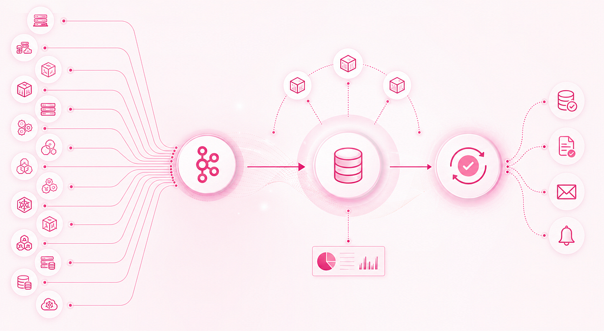
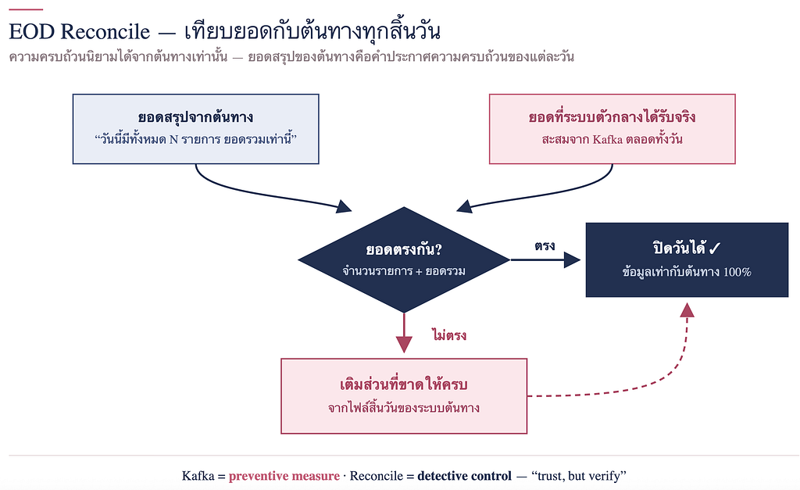

“ทำไมไม่เชื่อ Kafka ไปเลย?”

บรรยากาศการประชุมค่อนไปทางอึดอัดนิดๆ หลังจากทีมฉันแจ้งทีมอื่นๆ ไปว่า เราต้องทำการ reconcile data เพื่อให้ได้มาซึ่งความน่าเชื่อถือของข้อมูล มีคำถามตามมาหลายคำถาม แต่ในบทความนี้ ฉันอยากเขียนเล่าและอธิบายคำถามนี้ค่ะ
“ทำไมต้อง Reconcile ทำไมเราไม่เชื่อ Kafka ไปเลย?”
ทีมฉันทำระบบที่เป็นตัวกลางในการรวบรวมข้อมูลจากระบบต่างๆ มากกว่า 10 ระบบ เพื่อให้ระบบอื่นๆ นำข้อมูลไปใช้งานต่ออีกหลายระบบ และหลายวัตถุประสงค์ค่ะ
เราออกแบบให้ทุกระบบส่ง transaction มาให้เราแบบ a-sync ด้วย Kafka เพื่อให้เราเอาไปจัดเก็บนำไปใช้งานอื่นๆ ต่อไป ในงานที่ต้องการดูข้อมูลแบบ near realtime และเรากำลังจะขอเพิ่ม scope requirement โดยให้ทุกระบบส่งข้อมูลมาให้เราตอน end of day เพื่อที่เราจะทำ process reconcile เพิ่มเติม
กลับมาที่คำถามกันค่ะ
“ทำไมเราต้อง Reconcile?”
เพราะเราต้องการให้ข้อมูลของเราเท่ากับระบบต้นทาง 100%

“ทำไมเราไม่เชื่อ Kafka ไปเลย?”
Kafka รับประกันว่า ของที่ถูกส่งมาจะถึงปลายทาง แต่ไม่มีทางรู้เลยว่า ของที่ต้องส่งมา ถูกส่งมาครบหรือเปล่า
และเราไม่ได้ไม่เชื่อ Kafka นะคะ
แต่ Kafka คือ ระบบขนส่งข้อมูล ไม่ใช่ source of truth สิ่งที่เราไม่เชื่อ คือ ทุกอย่างรอบๆ Kafka ตั้งแต่ coding producer, network, ไปจนถึง consumer
ตัวอย่างเช่น ระบบต้นทาง commit ลง DB สำเร็จ แต่ app crash ก่อน produce เข้า Kafka และไม่มี error โผล่ที่ไหนเลย เพราะ message นั้นไม่เคยมี ไม่เคยเกิดขึ้น
และ reconcile ไม่ใช่เรื่องความเชื่อใจเทคโนโลยี แต่เป็นข้อกำหนด เป็นเงื่อนไขในการควบคุม การตรวจสอบความถูกต้องของข้อมูล ให้เป็นไปตามมาตรฐานที่ธนาคารกำหนด โดยต้องพิสูจน์ความครบถ้วนของข้อมูลได้ ไม่ใช่แค่เชื่อว่าครบ
ระบบโอนเงินก็ทำงานถูกต้อง แต่ตอนสิ้นวัน ในทุกธนาคารก็ยังต้องทำ settlement/reconcile กันอยู่ดี ดังนั้น near real-time / real-time channel มีไว้เพื่อความพร้อมในการใช้งาน ส่วน EOD reconcile มีไว้เพื่อความถูกต้องครบถ้วนสมบูรณ์ มันคนละหน้าที่กัน ไม่ได้มีไว้แทนกันค่ะ
ขอปิดบทความนี้ด้วย ประโยค auditor สุดๆ นะคะ
“trust, but verify”
ทีมคุณเคยโดนคำถามแบบนี้ไหมคะ แล้วตอบว่าอะไรบ้างคะ?